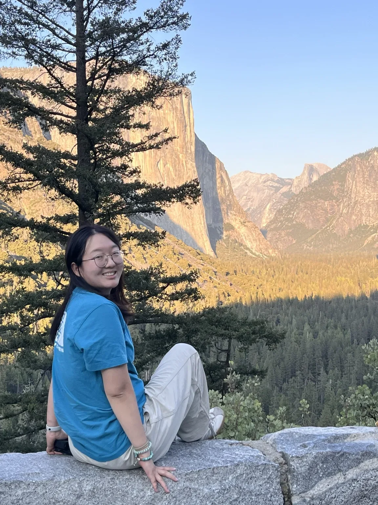
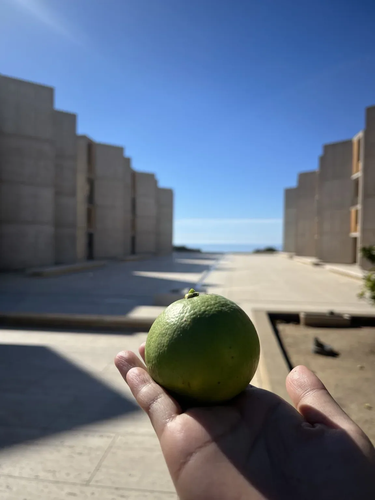
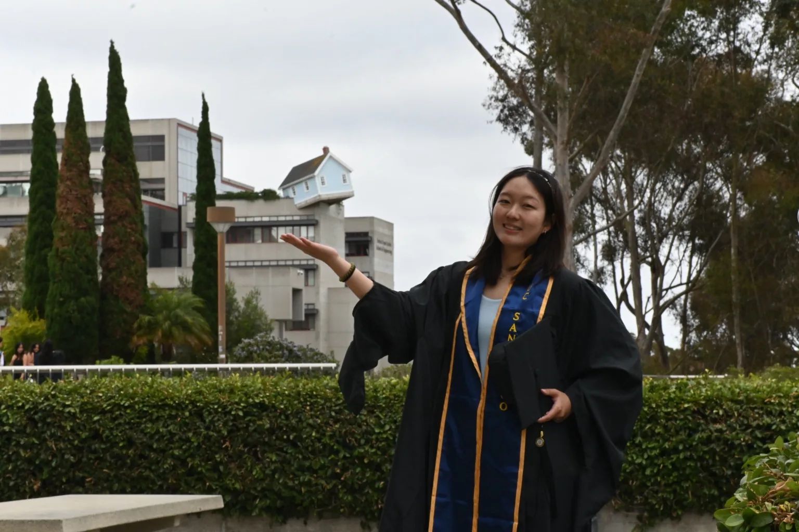
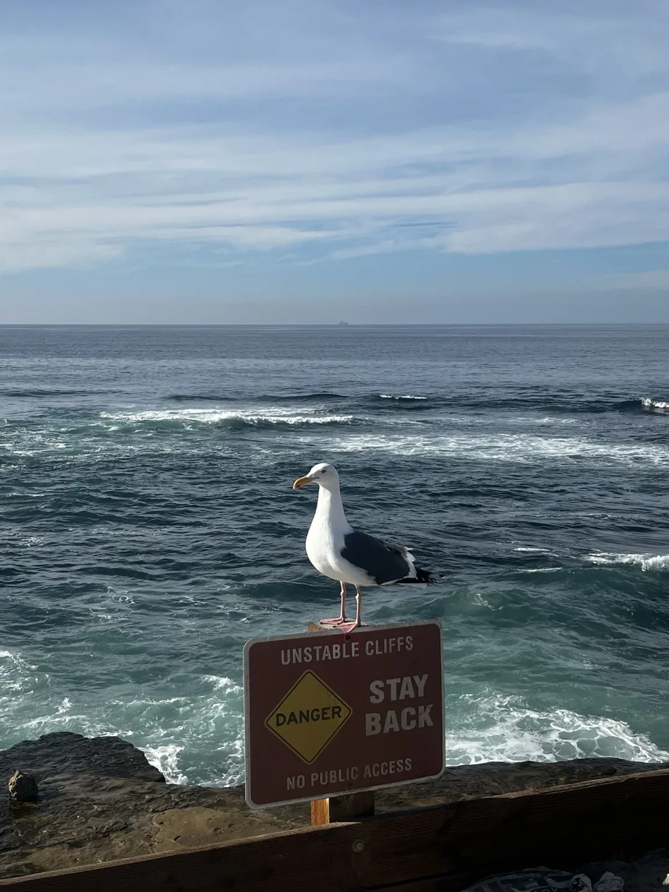
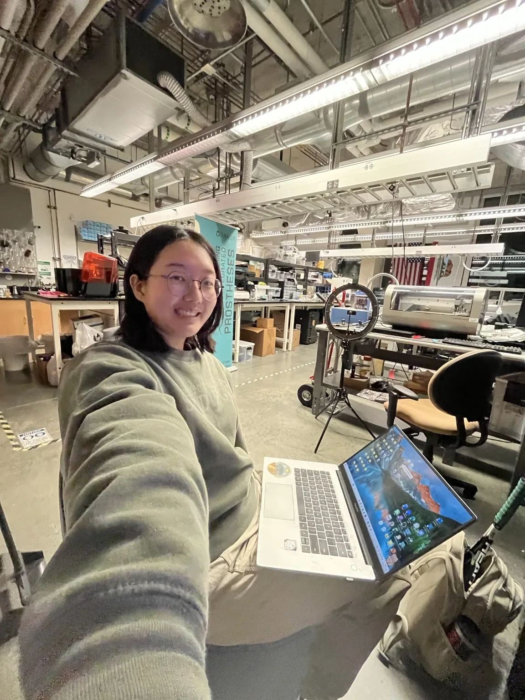
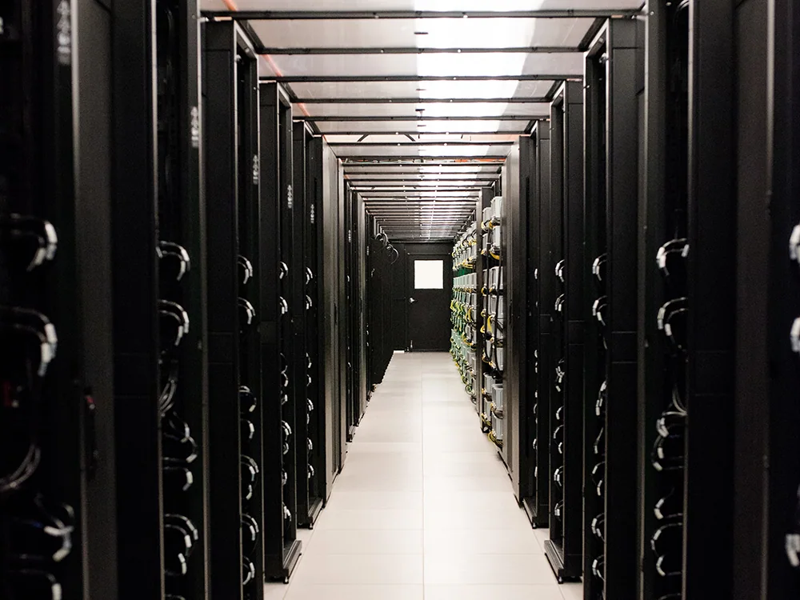

THE PERSONAL WEB MAGAZINE OF HANNAH HEISSUE 006 / 2026CALIFORNIA · USA
HANNAH!
MATERIALS, MACHINES, MOUNTAINS & EVERYTHING ELSE.
Notes from research, work, and the days in between.




RESEARCH NOTES · ENGINEERING JOURNAL · DAYS OFFOpen to page one ↗
ASK QUESTIONS ✳ MAKE THINGS ✳ GO OUTSIDE ✳ KEEP LEARNING
THE CONTENTS / WHAT IS INSIDE
Inside this issue.
Four chapters about different parts of my life. Choose one to read without leaving the page.
Meet Hannah.
My background, what I care about, and the things I do outside work.

Research.
Flexible sensors, materials, testing methods, and three co-authored papers.

Engineering.
What I am learning about liquid cooling and mechanical manufacturing.
Journal.
Hiking, the ocean, photography, and small records of ordinary days.
Looking for the technical version?
Education, research experience, publications, laboratory tools, computation, and student leadership — collected in a readable CV.